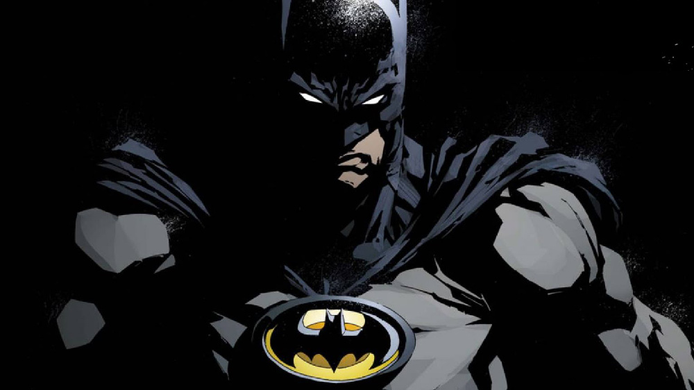
【长篇书单】来自REDDIT的蝙蝠侠补漫指南（下）

上期地址：蝙蝠侠补漫指南（上）
新哥谭
在此期间，很多焦点都集中在哥谭市内可能与蝙蝠侠没有直接关联的地方与角色。这有助于让哥谭显得更加生活化，而不仅仅是蝙蝠侠冒险的背景。
·大灾变，无主之地

这场大规模的联动事件涉及到了蝙蝠家族的每个成员。一场大地震摧毁了哥谭市，让它成为了一个无法无天的废土。蝙蝠侠和GCPD则努力将秩序带回哥谭。这些故事还介绍了卡珊德拉·该隐，第二任蝙蝠女郎。
·蝙蝠女郎V1 ＃1-29，＃33-37
在无主之地中初登场后，蝙蝠女郎巩固了她在蝙蝠家族中的位置，并探究了她的起源故事。
·蝙蝠侠：眨眼
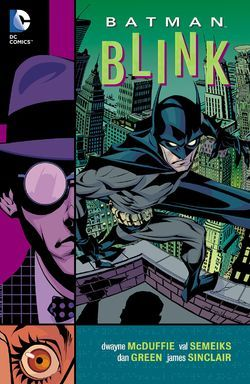Cover for the Batman: Blink Trade Paperback
《黑暗骑士传奇》#156-167，一个侦探故事，蝙蝠侠必须与一个盲人结盟以阻止一场谋杀案，他可以通过别人的眼睛看到事物。
·哥谭骑士＃32 “24/7”
布鲁斯·韦恩生活中的一天
·猫女：塞琳娜的大目标
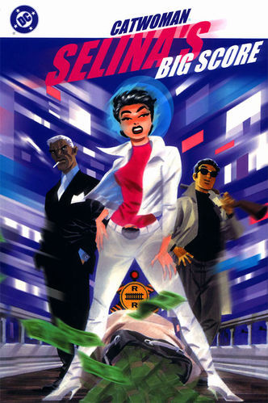Cover
猫女必须完成她生命中最大的抢劫，并在此过程中遇到了一些老朋友。
·猫女V3 ＃1-32
Ed Brubaker和Darwyn Cooke的传奇连载，这些故事让赛琳娜从小偷变成了东区的罗宾汉
·犯罪之城

一个黑暗的谜团，将蝙蝠侠带入了哥谭下方最贫瘠的地区。
·阿克汉姆疯人院：人间地狱
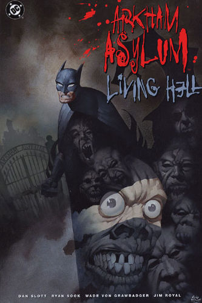
伴随着腐败的股票经纪人沃伦•怀特一同探索阿克汉姆，他最大的错误，就是以疯狂的托词离开监狱。
·蝙蝠侠：自我（EGO）
一个探索蝙蝠侠内心思想和怀疑的短篇小说
·哥谭重案组 ＃1-40
这个令人难以置信的系列讲述了GCPD的重大犯罪部，他们试图在一个由腐败，怪胎和蒙面义警统治的城市中工作。
·蝙蝠侠：头罩之下
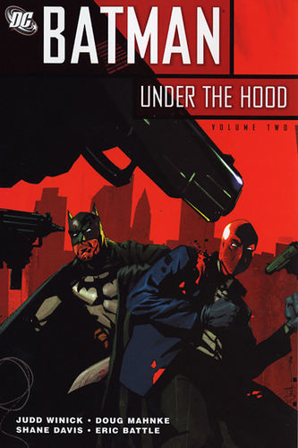
一个被称为红头罩的蒙面男子开始在哥谭市打击犯罪，并以致命的武力接管它。他与蝙蝠侠最大的错误之一：杰森·托德的死有什么联系呢？
莫里森时代
在此期间，格兰特·莫里森开始了他传奇的“蝙蝠侠史诗”，他引入了新角色，并撼动了蝙蝠侠的一切基础。在“蝙蝠侠安息”和“布鲁斯·韦恩归来”之间，许多刊物同时并进并且互有重叠。
·侦探漫画＃821-850
保罗·迪尼（Paul Dini）在这个系列中的表现出色，虽然有时因其他刊物中发生的重大事件而被蒙上阴影，却完美地讲述了蝙蝠侠历史上的小故事。
·蝙蝠侠机密档案 ＃49 “从未完成的工作”
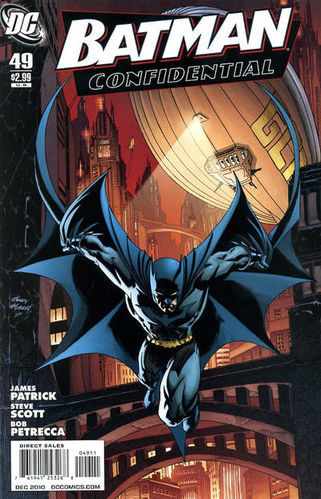Cover
蝙蝠侠调查谋杀案现场的典型夜晚。
·蝙蝠侠与其子
（莫里森史诗第1部分）塔莉亚回来了，她带来了一个惊喜：布鲁斯的儿子达米安·韦恩。
·蝙蝠侠：黑手套
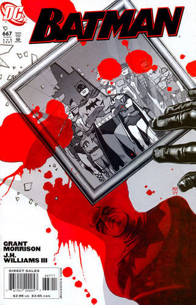Cover
（莫里森史诗第2部分）蝙蝠侠和前英雄俱乐部的其他成员被邀请到他们神秘赞助人的私人岛屿，然后事态急转直下。
·蝙蝠侠安息
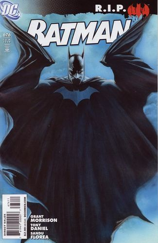Cover
（莫里森史诗第3部分）黑手套协会决定玩弄蝙蝠侠的生命，直到他们决定结束它为止。
·蝙蝠侠：时间与蝙蝠侠
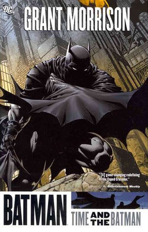Cover for the Batman: Time and the Batman Trade Paperback
（莫里森的史诗第4部分）从蝙蝠侠的角度探讨最终危机事件。
·蝙蝠侠：披风斗士的命运
虽然不是严格意义上的经典，但这期其实是对蝙蝠侠的哀悼，无论是作为一个虚构的角色还是一个真实的想法。在他葬礼上的客人包括蝙蝠侠历史上的人物，活着和死亡的人物，以及不再存在的人物。
·蝙蝠侠和罗宾V1＃1-16
（莫里森史诗第5部分）随着布鲁斯·韦恩被推定死亡，迪克·格雷森再次接过了披风，这次达米安·韦恩作为他的罗宾。
·哥谭街头 ＃1-11
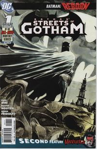
Paul Dini的有一个聚焦哥谭市黑帮的系列。这是他的侦探漫画连载的精神续作。
·蝙蝠侠：黑镜
作为蝙蝠侠的迪克·格雷森不得不与小詹姆斯·戈登抗争，后者作为连环杀手归来，同时也是对哥谭市和迪克·格雷森本人的黑暗面的反映。
·蝙蝠女侠：挽歌
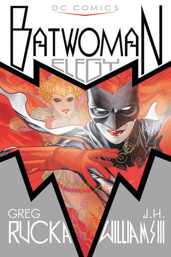
凯特·凯恩是新的蝙蝠女侠，她在探索她的过去并踏入她的新角色时，必须面对超自然的威胁。
·哥谭魅影＃1-11
 Gotham City Sirens Vol 1 1
Gotham City Sirens Vol 1 1
猫女决定与毒藤女及哈莉奎因合作，希望她能控制住她们的邪恶倾向。
·蝙蝠女郎 V3＃1-24
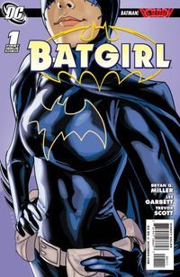
随着布鲁斯的离开，卡茜决定放弃蝙蝠女郎的衣钵，而史蒂芬妮·布朗决定将其接过。她意识到学习过程会十分艰难，但芭芭拉·戈登会提供帮助。
·蝙蝠侠：布鲁斯·韦恩归来
（莫里森史诗第6部分）蝙蝠侠被送到了数千年前，他必须回到现在。
·蝙蝠侠群英会 V1＃1-8
（莫里森史诗第7部分）布鲁斯·韦恩已经归来，并决定通过他的部队在全球范围对抗犯罪
新52
2011年，DC决定重启他们的整个宇宙，尽管蝙蝠家族相对保持稳定，但还是产生了一定的变化。
·蝙蝠侠＃1-11 猫头鹰法庭
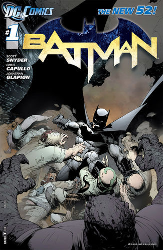
布鲁斯韦恩发现了一个关于哥谭市历史的黑暗秘密，甚至可能关系到他自己的家人。
·蝙蝠侠和罗宾 V2＃1-8 为杀而生
布鲁斯必须学会成为他儿子兼罗宾：达米安的父亲和搭档。
·蝙蝠侠群英会V2 ＃0-13
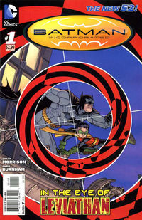
（莫里森史诗第8部分）格兰特·莫里森的蝙蝠史诗的结局终于来临，塔莉亚·阿尔·古尔决定收回她的儿子，不论死活。
·蝙蝠侠与罗宾 V2＃18 “安魂曲”
完全沉默的一期，讲述了布鲁斯·韦恩哀悼他儿子的死亡。
·罗宾：蝙蝠侠之子 ＃1-6
前往天启星并返回之后，达米安被父亲复活了。现在他必须继续救赎他在训练期间犯下的罪行。
·格雷森 ＃1-20
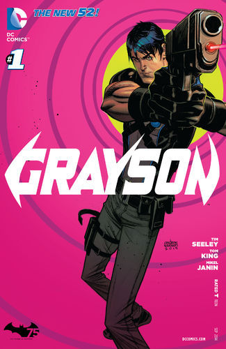Cover
在他的身份被揭露并被世人认定为死亡之后，迪克·格雷森决定成为一名间谍，潜入秘密犯罪组织诛网。
·哥谭学院＃1-12
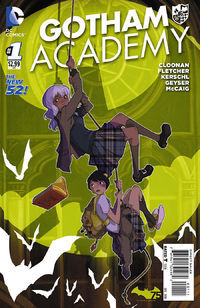
讲述了哥谭学院生活的轻松故事，包括那里发生的各种奇怪而神秘的事情。
·猫女V4＃35-46
赛琳娜已成为狮王犯罪家族的负责人，但她能否保持和平，还是会在哥谭引发战争？
重生
·红头罩与法外者 V2
萝卜呆第二次执笔这个系列，Jason与比扎罗及阿尔忒弥斯组成了一个不太可能的家庭
·蝙蝠侠/爱发先生
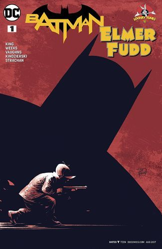
这是猎蝙蝠的季节，故事中发生了惊人的戏剧性转折，爱发先生试图追捕布鲁斯·韦恩
·蝙蝠侠＃23 “英勇与发霉”
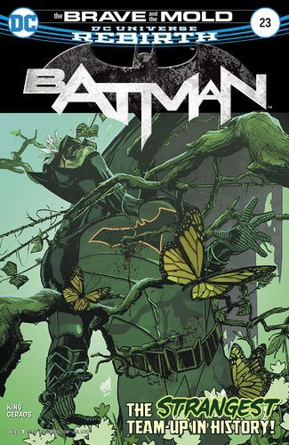
一个侦探故事，蝙蝠侠必须与沼泽怪物合作，以调查沼泽怪物父亲的死亡。
·蝙蝠侠＃36,37 “超级朋友”
布鲁斯，赛琳娜，克拉克与露易丝花时间在展会上共度一晚。
连续性之外的故事
有时作家会在连续性之外创作故事，而这些故事也是最好的故事。
·英勇与无畏＃197 “布鲁斯韦恩的自传！”
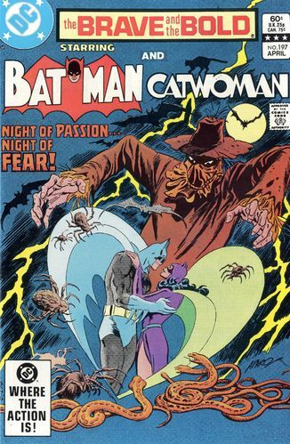Cover
这个故事是从地球二蝙蝠侠（黄金时代）的角度讲述的，他讲述了自己是如何爱上的猫女。
·黑暗骑士归来
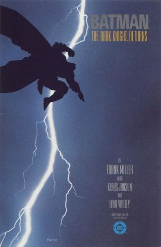
最后的蝙蝠侠故事，永远改变了人们看待蝙蝠侠的方式。在蝙蝠侠退休之后，他必须在犯罪占领哥谭时重新穿上披风。
·蝙蝠侠历险记

基于蝙蝠侠TAS改编，这些故事保持了与动画剧集相同的高水平。一些故事极受欢迎，以至于之后被改编成了动画，特别是“疯狂的爱”。
·蝙蝠侠和罗宾历险记＃1-10
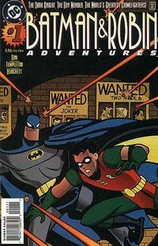
这是前一系列的精彩续集，有了Paul Dini参与撰写，早期的内容都令人难忘。
·蝙蝠侠：哥谭历险＃1-14
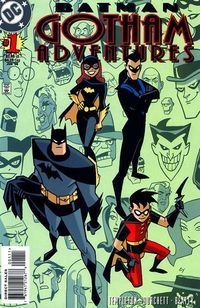
Ty Templeton撰写了该系列，作为The New Batman Adventures电视剧集的延伸。
·蝙蝠侠：哥谭历险＃33 “蝙蝠侠不再！”
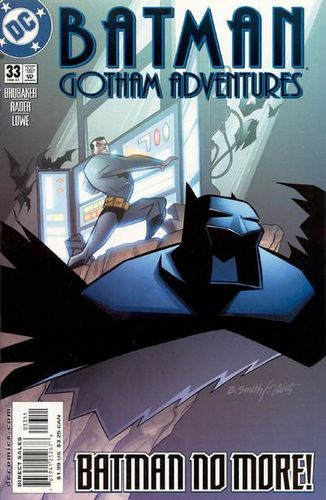
如果他的父母从未被枪杀，布鲁斯见到了他全新的生活。
·蝙蝠侠：哥谭历险＃51“提前解冻”
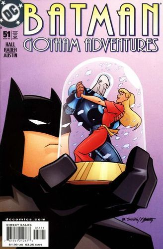
维克多·弗里斯为他的爱人诺拉提供了第二次机会
·蝙蝠侠：100年
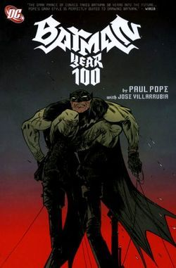
一个反乌托邦的科幻故事，在遥远的未来哥谭，一个不知名的新蝙蝠侠必须同时打击犯罪与腐败的专制警察部队。
·蝙蝠侠：小小哥谭 V1
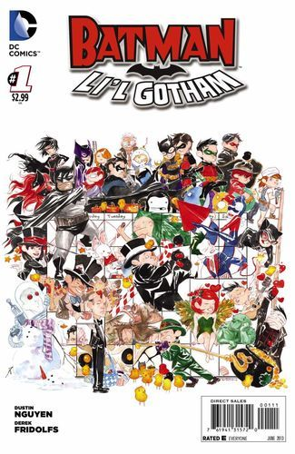
这是一个可爱且极具娱乐性的短篇故事合集，涉及到蝙蝠家族的各个成员，每一期都发生在不同的节日。
·蝙蝠侠 年刊＃2 “那些日子”
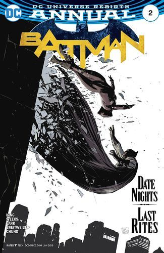
我们看到了蝙蝠侠和猫女的关系的起源，以及可能的结局
·蝙蝠侠：夜行生物
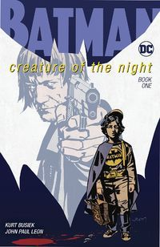
一个发生在现实世界的故事，这里的蝙蝠侠只是漫画人物，年轻的布鲁斯·温莱特开始注意到悲剧降临后的奇怪事件。
全文完
原贴地址：【https://www.reddit.com/r/DCcomics/comments/9as5ua/the_chronological_and_comprehensive_batman/】
![[跪了]](2018new_gui_org.png "[跪了]")
![[doge]](2018new_doge02_org.png "[doge]")